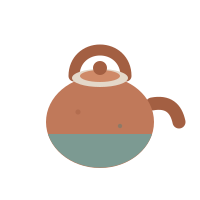

Το εργαστήριο
Ο πηλός είναι χώμα, και καταλήγει στο τραπέζι σας
Δουλεύω μόνη μου, στην Αττική. Κάθε κομμάτι που φεύγει από αυτό το εργαστήριο το έφτιαξαν τα δύο μου χέρια, από την πρώτη μάζα πηλού μέχρι το τελευταίο σφουγγάρισμα της βάσης. Το κάνω εδώ και περίπου πέντε χρόνια.
Αυτό που με τράβηξε στην κεραμική και δεν με άφησε ποτέ είναι το πόσο απλό είναι το υλικό. Ο πηλός είναι γη — τον βγάζεις από το έδαφος — και μπορεί να γίνει μια κούπα που κάποιος κρατάει κάθε πρωί. Τα περισσότερα που φτιάχνω προορίζονται ακριβώς γι' αυτό: μπολ, πιάτα και κούπες που μπαίνουν στο πλυντήριο και ξαναβγαίνουν για το επόμενο γεύμα. Υπάρχουν και κομμάτια καθαρά διακοσμητικά, και αυτά έχουν τη θέση τους — αλλά τα χρηστικά είναι εκεί που χτυπάει η καρδιά μου.
Επειδή όλα γίνονται στο χέρι, δεύτερο ίδιο κομμάτι δεν υπάρχει. Μπορώ να πλάσω το ίδιο σχήμα αύριο και το γλάσο θα σπάσει αλλιώς στη φωτιά. Αυτό δεν είναι ελάττωμα για να ζητήσω συγγνώμη — είναι ο λόγος που αξίζει να φτιάχνονται έτσι τα πράγματα.

Η διαδικασία
Πώς φτιάχνεται μια κούπα
Από την αρχή ως το τέλος, ένα κομμάτι θέλει περίπου δύο εβδομάδες — και τον περισσότερο χρόνο τον περνάει περιμένοντας να στεγνώσει.
-
Ζύμωμα
Ο πηλός ζυμώνεται για να φύγουν οι φυσαλίδες αέρα. Μια παγιδευμένη φυσαλίδα θα τινάξει το κομμάτι στον φούρνο.
-
Πλάσιμο
Κεντράρεται στον τροχό και τραβιέται σε σχήμα, και μετά αφήνεται να σφίξει.
-
Ξύσιμο
Ξαναμπαίνει ανάποδα στον τροχό για να σκαλιστεί η βάση, και μετά μπαίνουν τα χερούλια, τραβηγμένα στο χέρι.
-
Πρώτο ψήσιμο
Ένα αργό πρώτο ψήσιμο στους 1000°C μετατρέπει τον εύθραυστο πηλό σε κάτι που αντέχει το γλάσο.
-
Γλάσωμα
Βουτιέται με το χέρι, μια πλευρά τη φορά. Οι σταγόνες σκουπίζονται από τη βάση ώστε να μην κολλήσει στο ράφι του φούρνου.
-
Δεύτερο ψήσιμο
Μέχρι τους 1200°C σε δώδεκα ώρες, και μετά μια ολόκληρη μέρα για να κρυώσει πριν ανοίξει ο φούρνος.
Φροντίδα & χρήση
Ζώντας με χειροποίητα κεραμικά
Όλα ψήνονται σε θερμοκρασία πέτρινου κεραμικού, οπότε δεν απορροφούν υγρά, είναι ασφαλή για τρόφιμα και αντέχουν περισσότερο απ' όσο δείχνουν. Λίγα πράγματα που αξίζει να ξέρετε:
- Πλυντήριο πιάτων: κανένα πρόβλημα, πάνω ή κάτω ράφι. Τίποτα εδώ δεν έχει χρυσό ή μεταλλικό φινίρισμα.
- Φούρνος μικροκυμάτων: κανένα πρόβλημα. Το χερούλι μπορεί να ζεσταθεί πριν το ρόφημα.
- Φούρνος: ασφαλή μέχρι τους 230°C, αλλά αποφύγετε τις απότομες αλλαγές — όχι από το ψυγείο κατευθείαν στον φούρνο.
- Άβαφη βάση: ο πάτος κάθε κομματιού είναι γυμνός πηλός, τριμμένος λείος. Σε μαλακή επιφάνεια μπορεί να αφήσει σημάδι, οπότε σε γυαλισμένο τραπέζι βάλτε ένα σουβέρ.
- Λεπτές γραμμές στο γλάσο: είναι φυσιολογικές σε ορισμένες συνταγές και δεν επηρεάζουν την ασφάλεια των τροφίμων.
Συχνές ερωτήσεις
Θα είναι ακριβώς όπως στη φωτογραφία;
Κοντά, αλλά όχι πανομοιότυπο. Κάθε κομμάτι πλάθεται και γλασάρεται στο χέρι, οπότε το μέγεθος μπορεί να διαφέρει λίγα χιλιοστά και το χρώμα του γλάσου αλλάζει από ψήσιμο σε ψήσιμο. Αν χρειάζεστε ακριβές ταίριασμα με κάτι που ήδη έχετε, πείτε το μου και θα δουλέψω πάνω σε αυτό.
Φτιάχνετε κάτι με λέξεις ή λογότυπο πάνω;
Ναι, το κάνω — ένα λογότυπο, ένα όνομα, μια ημερομηνία ή μια δική σας φράση, ψημένα πάνω στον πηλό. Επικοινωνήστε και περιγράψτε μου τι έχετε στο μυαλό σας.
Μπορώ να επισκεφτώ το εργαστήριο;
Ναι, κατόπιν ραντεβού. Είναι χώρος δουλειάς και όχι κατάστημα, οπότε επικοινωνήστε πρώτα και βρίσκουμε μια ώρα.